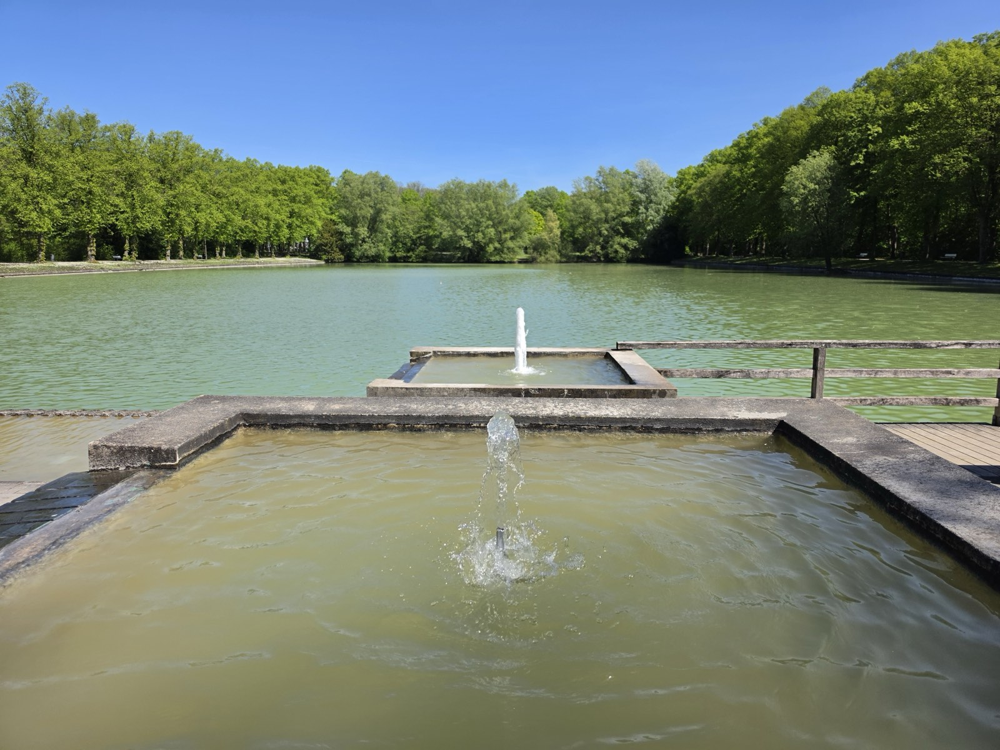
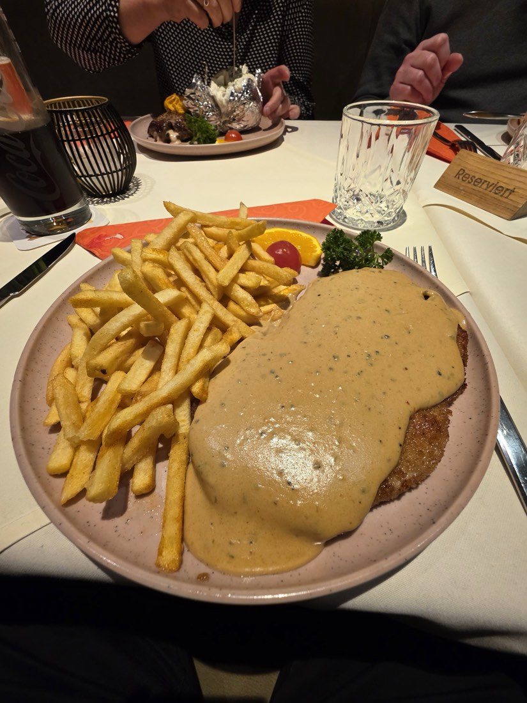

Am Wasser gebaut. Am Feuer gekocht.
Landrestaurant & Café am Langst-Teich im Ahlener Stadtwald. Terrasse über dem Wasser, Fleisch vom Grill, Salatbuffet dazu.
- Ahlen · Am Stadtwald
- 4,6 ★ · 705 Bewertungen
- Dienstag Ruhetag
Ankommen
Erst der Wald, dann der Damm. Dann liegt der Teich vor Ihnen, und an seinem Ufer ein weißes Fachwerkhaus mit einer Terrasse, die bis ans Wasser reicht.
Wer aus Ahlen kommt, ist in ein paar Minuten hier. Wer auf der Durchreise ist, hält an, weil das Haus am Wasser steht und weil davor genug Platz zum Parken ist. Drinnen wird gegrillt, draußen sitzt man überdacht und windgeschützt und schaut auf den Teich.
Ein Familienbetrieb: derselbe Wirt, dieselbe Küche, seit über einem Jahrzehnt.
Die Terrasse
Der Tisch, an dem das Wasser sitzt.
- Überdacht und windgeschützt, auch wenn das Wetter kippt.
- Schattenplätze an sonnigen Tagen, Blick auf den Teich von jedem Platz.
- Hunde sind willkommen, Kinder sowieso.
Draußen der See.
Drinnen das Feuer.
Was hier auf den Teller kommt, kommt vom Grill. Deshalb kommen die meisten wieder.


Vom Grill
Die Spezialität
des Hauses.
Die Platten für zwei: so viel Fleisch, dass ein Kind mitisst — und meistens noch ein zweites.
Balkan-Küche, wie sie sein soll: Ćevapčići, Bauchspeck, Djuvec-Reis, Ajvar. Alles vom Rost.
Und die Steaks: auf den Punkt gegart. Dieser eine Satz steht in den Bewertungen am häufigsten.
Immer dabei
Das Salatbuffet.
Zu den Platten gehört das Buffet. Vor dem Essen, während des Essens, so oft Sie möchten.
- 10
- Zutaten zur Auswahl
- 3
- Dressings
- ∞
- mal nachlegen
Ein Blick ins Haus




Was Gäste sagen
705 Bewertungen. 4,6 von 5.
auf Google
„Die Terrasse bietet auch an sonnigen Tagen genügend Schattenplätze mit tollem Ausblick. Das Essen schmeckt wirklich super, besonders die Grillgerichte.“
„Sehr gute Steaks gegessen. Auf den Punkt gegart. Sehr leckere Soßen. Preis-Leistung top.“
„Nach unserem ersten Besuch waren wir bereits ein zweites Mal dort, und auch dieses Mal war alles perfekt.“
Gut zu wissen
Damit der Besuch passt.
- Terrasse am Wasserüberdacht und windgeschützt
- Kostenlos parkeneigener Parkplatz am Haus
- BarrierefreiParkplatz, Eingang, WC, Sitzplätze
- Hunde willkommendrinnen wie draußen
- Karte & kontaktlosEC, Kreditkarte, NFC
- Für Familienkindgerecht, Platz für große Runden
| Montag | 11:30 – 22:00 |
|---|---|
| Dienstag | Ruhetag |
| Mittwoch | 11:30 – 22:00 |
| Donnerstag | 11:30 – 22:00 |
| Freitag | 11:30 – 22:00 |
| Samstag | 11:30 – 22:00 |
| Sonntag | 11:30 – 21:00 |
Tisch sichern
Am Wochenende besser reservieren.
Ein Anruf genügt. Tische werden direkt am Telefon vergeben.
02382 8551018
Herkommen
Am Stadtwald 6.
Landrestaurant · Café Zur LangstAm Stadtwald 6
59227 Ahlen Route in Google Maps öffnen